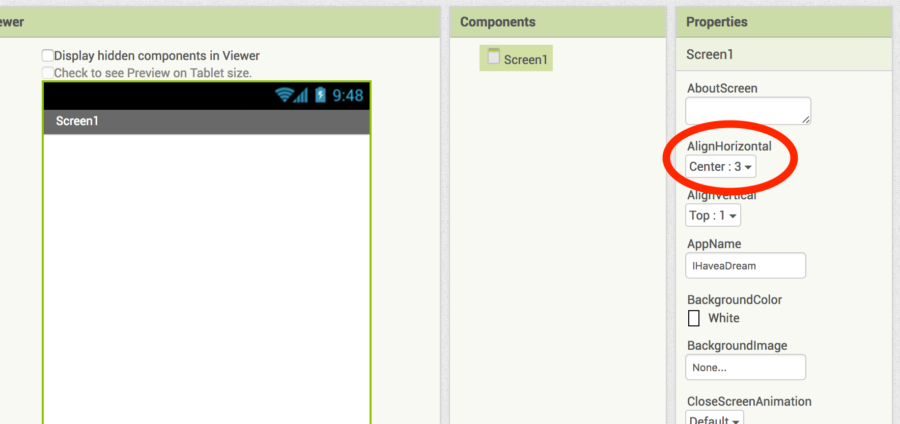
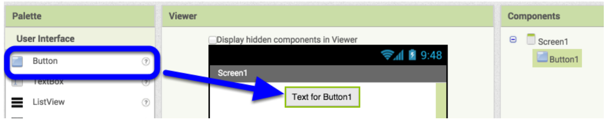
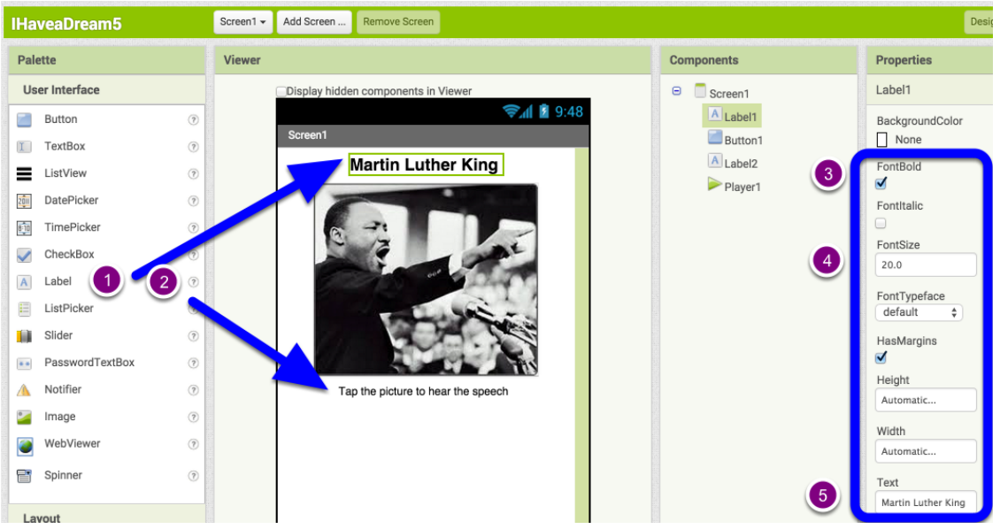
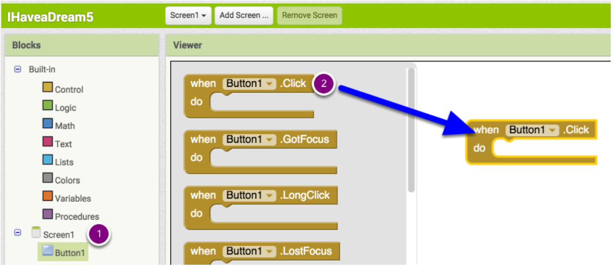
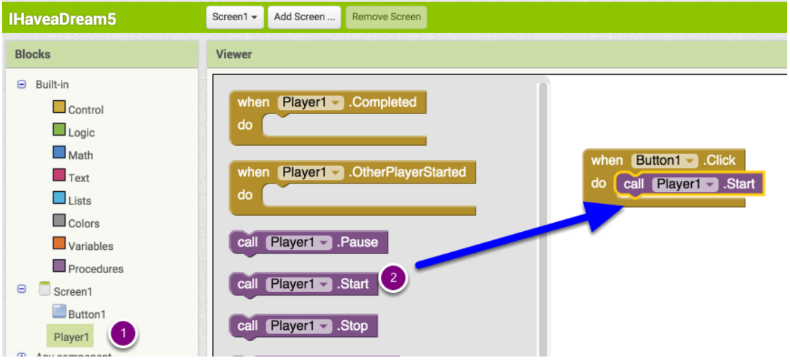
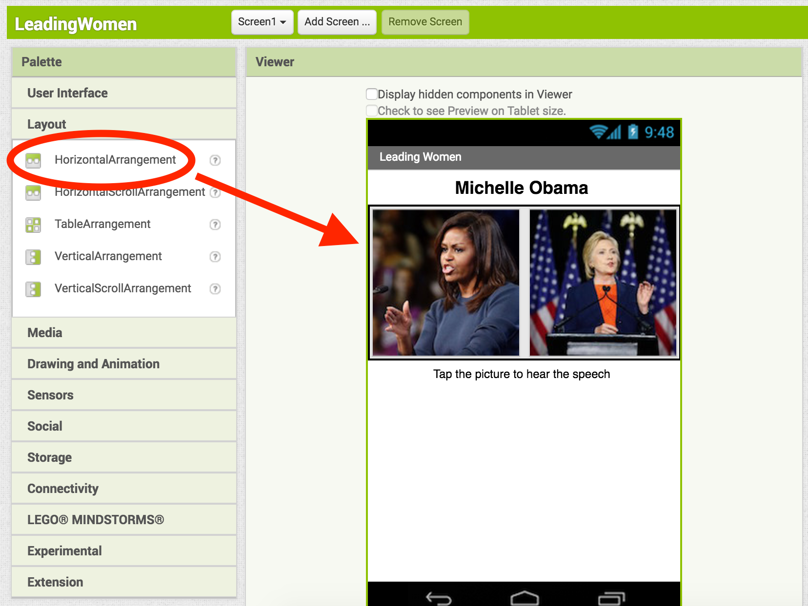
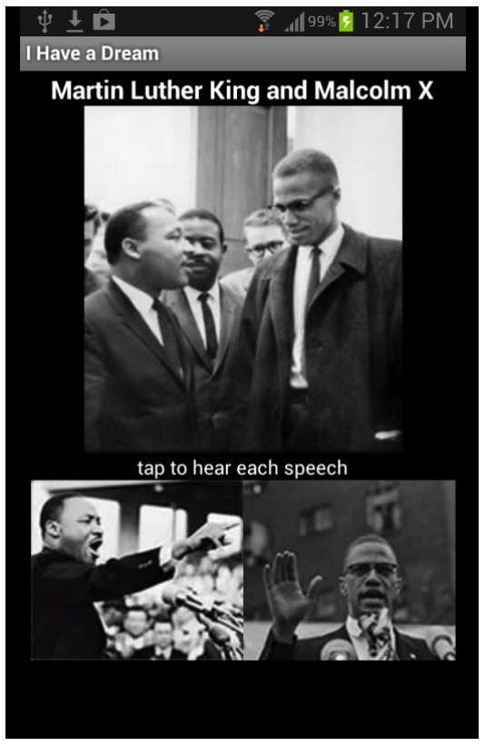
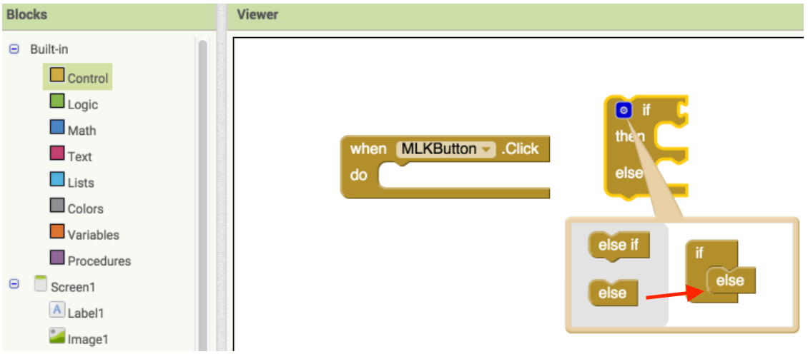
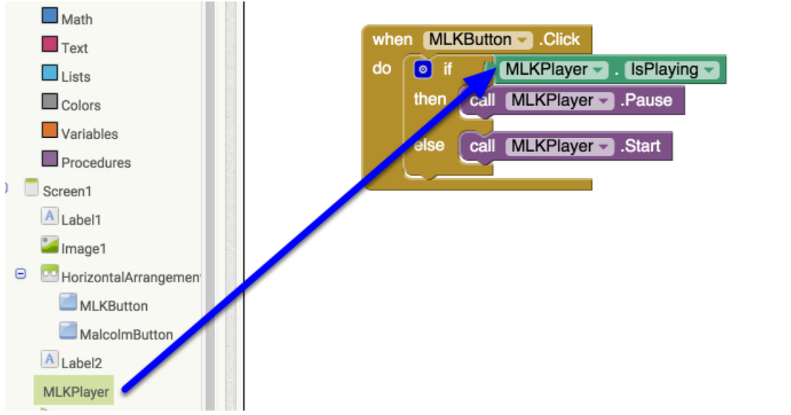
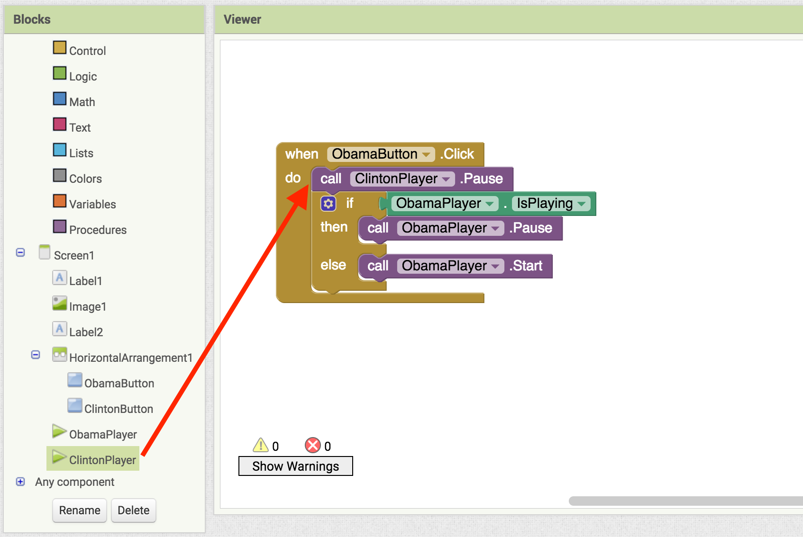

Set the Screen's AlignHorizontal property to "Center".

Drag a Button component into the workspace.

Challenges
Make the Button show a picture of Martin Luther King (use mlk.jpg).
Remove the text from the Button.
Drag two Label components onto the screen, one above the Button and one below.

Change the text of the labels as shown. For the top label, check the FontBold property and change the FontSize to 20.
Open the Media drawer and drag a Player component into the app.
Challenges
Set the source of the Player component to a sound clip of MLK's speech (use king.mpg).
Go to Blocks View. Drag a when Button1.Click event handler into the workspace.
Then place a call Player1.Start block into the event handler.

Now, you will modify your app to include Malcom X, another civil rights leader.
First, replace the image for your button with a smaller image (use mlk152x129.jpg).
Next, drag another Button component onto your screen, and set it to a picture of Malcolm X (use malcolm152x129.jpg).
From the Layout drawer, drag a HorizontalArrangment into the workspace, and add the two buttons so that they appear side-by-side.

Drag an Image component above the two buttons. Set the image to one of both MLK and Malcolm X (use 228px-MLK_and_Malcolm_X_USNWR_cropped.jpg).
Add a second Player component and set it to a sound clip of Malcolm X's speech (use malcolmx.mp3).
Challenges
Rename the Button and Player components as "MLKButton", "MalcolmButton", "MLKPlayer", and "MalcolmPlayer".
Make the user interface of your app look like this:

Go to Blocks View. Let's add the ability to pause the speech if it is already playing. To do this, we will use an if-else block.
First, drag a when MLKButton.Click block. Then, drag an if block from the Control drawer. Click the blue modifier icon, and drag an else block into the picture of the if block. This modifies your if block to have two branches.

Place the if-else block into the when MLKButton.Click event handler. Fill in the if-else block with the following blocks as shown.

Now, we want to ensure that both speeches will never play at the same time. If the MLK speech is playing and we click the Malcolm X button, we want the MLK speech to pause.
To do this, all we need to do is add a call MalcolmPlayer.Pause block to the event handler as shown.

Challenges
Code the Malcolm X button exactly like the MLK button. We want both buttons to behave the exact same way.
Hint: You can copy-paste blocks, as well as change the blocks to refer to different components using the arrow next to the component name.
You have used App Inventor to create an app that can play two different speeches without overlap.
What we've covered
Use Arrangement components.
Create more complex user interfaces.
Use if-else blocks to control what your app does.
Check a component's properties using code.
If you finish early, implement one or more of the following features for a bonus checkoff.